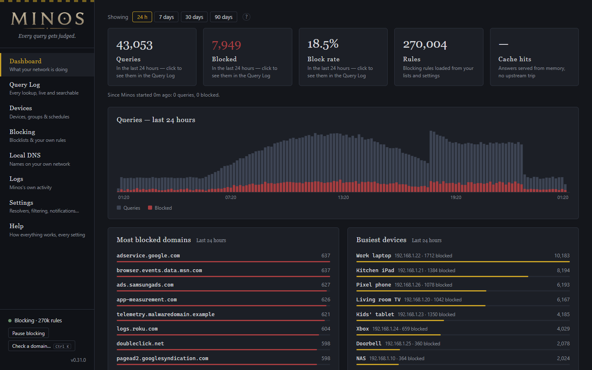
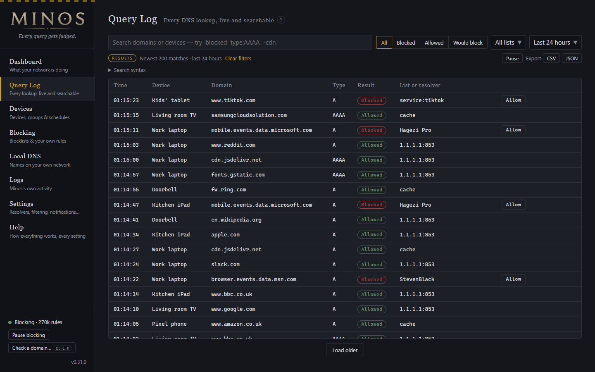
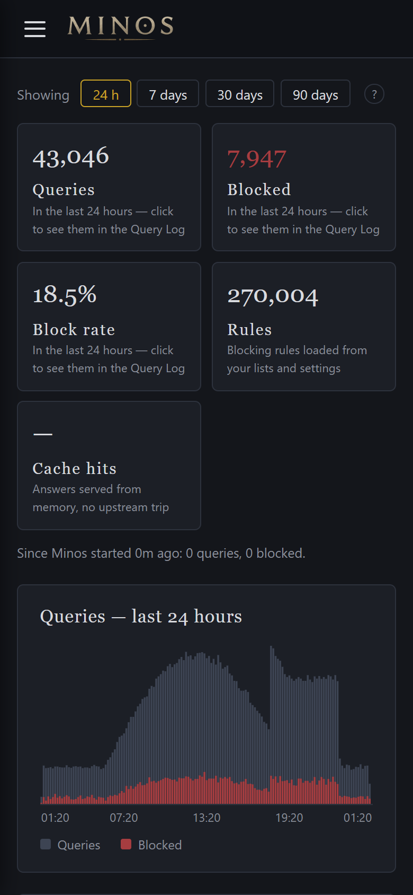
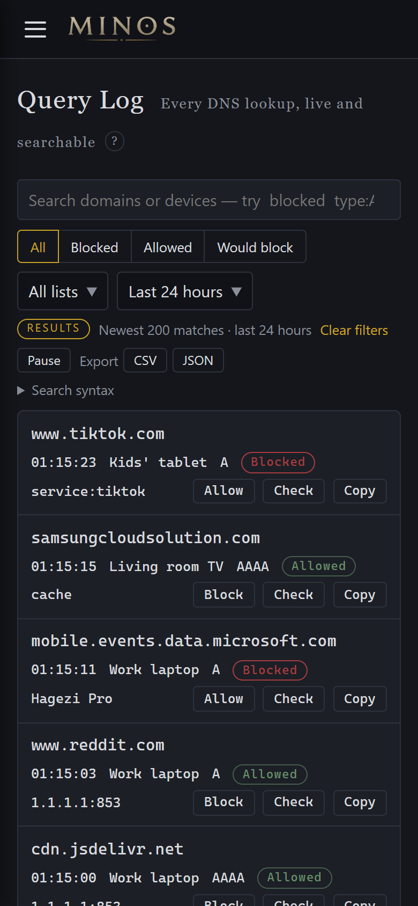
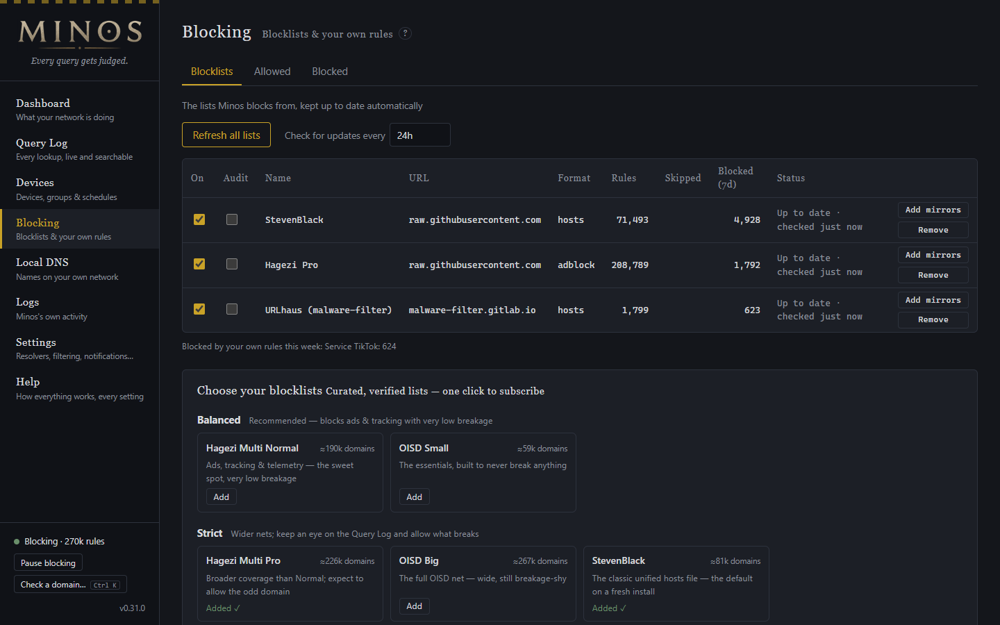

What is Minos
Minos is a DNS server for your home network that blocks ads, trackers and malware before they load. Point your router's DNS at it and every device that uses it — phones, TVs, consoles, laptops — has each lookup checked against your blocklists and your own rules: blocked names get an empty answer, everything else is looked up through the upstream resolvers you choose, encrypted.
It is one static Go binary with the web interface built in, light enough for a Raspberry Pi Zero, and everything is managed live from the browser — on a desktop or a phone. Nothing is ever sent home.

The dashboard — every number, domain and device is a link into the matching queries. (Demo data.)
Why Minos
- Every block explains itself. Each blocked lookup names the list and the rule that caught it, and Allow is on the row — never more than two clicks from seeing a block to fixing it.
- Try a list before you trust it. Audit mode shows what a new blocklist would block without blocking anything.
- Knows your devices. Names come from DHCP, mDNS, UPnP, NetBIOS and the MAC vendor registry, and rules follow a device across address changes.
- Modern DNS, both ways. Upstreams over DoH, HTTP/3, DoT or DNS-over-QUIC; devices can use Minos over DoT, DoH, HTTP/3 or QUIC, and Windows 11, iOS and macOS discover the encrypted endpoints themselves (DDR).
- Validates DNSSEC itself — and shows what enforcing it would cost before you turn it on.
- Updates itself, safely. One click installs a signed release and puts the old one back if the new one does not start.
- Explains itself. A built-in Help page covers every page and every setting.
What It Does
Blocking
- Hosts, plain-domain and AdBlock-syntax blocklists, with a curated catalog (balanced, strict, security, family) that is verified weekly by compiling every list.
- Lists keep blocking from a local copy when their host is down, retry on a sensible schedule, refuse a suspiciously shrunken update, and fall back to publisher mirrors — and you are told when one stops updating.
- Your own allowed and blocked domains, including
/regex/rules, plus subscribed allowlists. - CNAME-cloak inspection (on by default): a tracker hiding behind a first-party name —
metrics.shop.com → tracker.net— is still blocked. - One-click blocked services (TikTok, YouTube, Discord…) and your own custom services, globally or per group.
- Blocked answers as
0.0.0.0/::or NXDOMAIN, with Extended DNS Errors (RFC 8914) naming the list for clients that ask.
For the network
- Local DNS records (
nas.home.arpa, wildcards, CNAMEs, automatic PTR) and conditional forwarding to your router. - Private reverse lookups answered locally (RFC 6303) —
192.168.x.xnever leaks to public resolvers. - DNS rebinding protection, per-device rate limiting, and an open-resolver guard that answers only your own networks.
- A response cache with request collapsing and serve-stale (RFC 8767); a failing upstream is sidestepped automatically.
- Firefox's automatic DNS-over-HTTPS switched off network-wide, and iCloud Private Relay blockable, so filtering can't be bypassed quietly.
Running it
- A Query Log over the full history that answers searches in milliseconds on millions of rows.
- Dashboard windows from 24 hours to 90 days; host health (CPU, memory, temperature, disk) on non-container installs.
- Minos's own application log in the browser, live, with secrets redacted.
- Notifications by webhook or ntfy that say what happened and what to do.
- Built for SD cards: batched writes, capped memory, and nothing slow between a reboot and working DNS.
- No telemetry. Ever.
How It Compares
As of October 2026, against each project's current release. ✅ yes · — no · ◐ partly.
| Minos | Pi-hole v6 | AdGuard Home | |
|---|---|---|---|
| Names the list and rule behind every block, with one-click allow | ✅ | ◐ | ✅ |
| Audit (dry-run) blocklists | ✅ | — | — |
| In-process DNSSEC validation | ✅ | — | — |
| One-click update from the web interface | ✅ signed, rollback | — | ✅ |
| Encrypted DNS for devices (DoT / DoH / DoQ / HTTP/3) | ✅ | — | ✅ |
| DDR — devices upgrade to encrypted DNS automatically | ✅ | — | ✅ |
| CNAME-cloak inspection | ✅ | ✅ | ✅ |
| Regex rules | ✅ | ✅ | ✅ |
| Per-device rate limiting & open-resolver guard | ✅ | ◐ | ✅ |
| Device groups with schedules | ✅ | ◐ | ◐ |
| Blocked-services catalog & Safe Search | ✅ | — | ✅ |
| Password login with two-step codes | ✅ | ✅ | ◐ |
| Application log in the web interface | ✅ | ✅ | — |
| DHCP server | — by design | ✅ | ✅ |
| Recursive resolver | — by design | add-on | — |
Minos forwards to the upstream resolvers you choose rather than resolving recursively, and leaves DHCP to your router.
Quick Start
On a Raspberry Pi or any Linux box — amd64, arm64, or 32-bit ARM (Pi Zero through Pi 4 on 32-bit Pi OS) — one line installs the latest release, the systemd unit and the updater:
curl -fsSL https://raw.githubusercontent.com/DanDreadless/minos/main/deploy/install.sh | sudo sh sudo systemctl enable --now minos
Docker
Multi-arch images are published on GHCR:
docker run -d --name minos -p 53:53/udp -p 53:53/tcp -p 8080:8080 \ -v minos-data:/data ghcr.io/dandreadless/minos:latest
Build from source
Requires Go 1.22+ and Node 20+:
make build # builds the web interface and one binary into bin/minos ./bin/minos serve # DNS on :53 and the web interface on :8080
First Run
Open the interface and set a password
Open http://<host>:8080, then Settings → Access & security. Until a password is set, anyone on your network can change Minos.
Choose blocklists
Blocking → Blocklists has a curated catalog; Balanced is the recommended start.
Point your devices at Minos
Set your router's DHCP DNS option to the Minos machine and every device follows.
Watch the Query Log for a day
If something you use breaks, find its blocked lookup and press Allow — or use Check a domain (Ctrl+K) from any page.
Raspberry Pi / Linux
Before the first start, free port 53 (disable the systemd-resolved stub listener or
dnsmasq), give the machine a fixed IP, and firewall ports 53 and 8080 to your LAN. Minos answers
only private networks and the networks it is connected to by default, so an accidentally exposed port never
makes it an open resolver. The step-by-step walkthrough is in
docs/getting-started.md.
The systemd unit runs Minos as an unprivileged dynamic user with a read-only system; settings and history
live in /var/lib/minos, which upgrades never touch.
Updating
With the update check on (Settings → System), a banner announces new releases. On installs made with the script, Update now does the rest:
- Downloads the release.
- The version installed now checks it: signed with the Minos release key (Ed25519), the archive matching its checksum, and newer — downgrades are refused.
- Keeps the current binary as
minos.prev, installs the new one and restarts. - If the new version does not answer within 30 seconds, puts the previous one back and tells you.
minos-update.path / minos-update.service) does the installing, and the button
appears only once a password or API token protects the interface. Docker installs update with
docker compose pull && docker compose up -d.
Or update from the command line at any time:
curl -fsSL https://raw.githubusercontent.com/DanDreadless/minos/main/deploy/install.sh | sudo MINOS_RESTART=1 sh
Command Line
The minos command talks to the running instance, reading the config file for its address and credentials:
minos status # counters, rules, pause state minos pause 5m # pause blocking for five minutes minos resume # resume blocking minos import pihole /etc/pihole # bring your Pi-hole settings with you minos logs -f # follow Minos's own log minos version
The Interface
| Page | What it is for |
|---|---|
| Dashboard | What your network did over 24 hours to 90 days, a Needs attention panel that appears only when something does, and host health. |
| Query Log | Every lookup, live and searchable over the full history: by domain or device, result, list, type and time, with typed filters such as blocked type:AAAA -cdn. |
| Devices | Every device that uses Minos, with discovered names, groups, schedules, notes and a page per device. |
| Blocking | Blocklists, and your own Allowed and Blocked domains and services, on three tabs. |
| Local DNS | Names on your own network and conditional forwarding. |
| Logs | Minos's own application log, live. |
| Settings | DNS, Filtering, Notifications, Device discovery, Access & security, System, Backup & import — unsaved changes are kept per tab and you are asked before leaving. |
| Help | Every page and every setting explained, searchable. |
The bottom of the side menu shows whether Minos is blocking right now, with Pause blocking and Check a domain.

The Query Log — devices by name, the list behind each block, and Allow on the row.


Every page works on a phone.
Blocking
Choose lists from the curated catalog or add any hosts, plain-domain or AdBlock list by URL. Each list shows
its rules, how much it blocked this week, and whether it is up to date; a list in audit mode
records what it would block without blocking. Allowed and Blocked hold your own rules — domains (subdomains
included), /regex/ patterns, and whole services.

Blocking → Blocklists, with the curated catalog below.
Devices & Family
- Device identity — IP, MAC, vendor and a discovered name, merged into one row per physical device even as its address changes.
- Groups — extra allowed and blocked domains, full bypass, or no DNS at all, on schedules such as "no social media after 21:00 on school nights".
- Blocked services — one click blocks TikTok, YouTube, Discord and more, per group or for everyone.
- Safe Search — Google, Bing, DuckDuckGo and YouTube, enforced by the provider so it can't be switched off on the device.
Sign-in & Access
- Password — stored only as an argon2id hash; a sign-in lasts 30 days on that browser, and Sign out everywhere else ends the rest. Five wrong tries from one address wait a minute.
- Authenticator app — optional 6-digit codes, set up by scanning a QR code.
- API token — for scripts and Home Assistant, alongside the password.
- Who may use DNS — private and local networks by default, or the networks you list; and a per-device query limit (1,000 a minute by default).
password_hash from minos.yaml on the Minos machine and restart.Encrypted DNS
Upstream, Minos speaks DoH, DNS over HTTP/3, DoT and DNS over QUIC, with curated presets for Cloudflare,
Quad9, AdGuard and others. Towards your devices it can serve DoT (Android Private DNS), DoH at
/dns-query, HTTP/3 on the same port, and DNS over QUIC — with your own certificate or one Minos
fetches and renews via ACME (Let's Encrypt through Cloudflare, deSEC, DuckDNS or RFC 2136).
dns:
tls:
dot_listen: ":853"
doh_listen: ":8443"
doq_listen: ":853" # UDP — shares the number with DoT's TCP port
With a listener on, Minos answers DDR (RFC 9462), so Windows 11, iOS and macOS move to encrypted DNS by themselves when the certificate covers the address they use.
DNSSEC Validation
Encrypted upstreams protect the path to your resolver; they don't protect you from it. Minos can check signed answers itself against the DNS root of trust, so even a dishonest upstream can't hand you a forged address for a signed domain.
dns: dnssec: permissive # off | permissive | enforce
- permissive — validate and record, never block. The dashboard lists the answers enforce would refuse, and warns when your upstream returns no DNSSEC records so validation is doing nothing.
- enforce — refuse answers that fail validation, shown in the Query Log as blocked by
dnssecwith the reason.
Logs, Metrics & API
- Notifications — webhook or ntfy: a new device, a list or resolver failing, DNS down (which ignores quiet hours), an update installed or rolled back, and an optional daily or weekly digest.
- Prometheus — scrape-only
/metricswith a ready-made Grafana dashboard. - REST API — fully documented, with Home Assistant recipes; everything the interface does, your automations can do.
Migrating In
Bring Pi-hole or AdGuard Home settings across — blocklists, allow and block rules (regex included), local records and blocked services:
minos import pihole /etc/pihole minos import adguard AdGuardHome.yaml
…or upload gravity.db / AdGuardHome.yaml in Settings → Backup & import. Imports only add; you can export and restore the whole configuration at any time.
Documentation
- User guide — every page and every setting, with defaults and config keys (also built into Minos as Help).
- Getting started — install, host preparation, encrypted DNS, monitoring, upgrading and the full config reference.
- REST API reference — every endpoint, with examples.
- Home Assistant recipes — blocking switch, sensors, bedtime automations.
- Roadmap — what has shipped and what is being considered.
Roadmap
The October 2026 round (v0.21–v0.31) brought plain naming and a reorganised, phone-ready interface; self-healing blocklists with mirrors; millisecond Query Log search and fast 90-day stats; the application log and Help in the app; Extended DNS Errors, CNAME-cloak inspection, rebinding protection, access control and rate limiting, DDR, regex rules, DNS over QUIC and HTTP/3; password sign-in with authenticator codes; and signed one-click updates with rollback. Still under consideration: replica config sync. Details in docs/roadmap.md.
Developing
Go 1.22+, Node 20+.
make test # the Go suite with the race detector make lint # golangci-lint and the frontend type check make bench # the filter-engine benchmarks
See CLAUDE.md in the repo for the architecture, conventions and performance budgets.
License
Minos is released under the GPLv3 licence. See the repository for the full text.